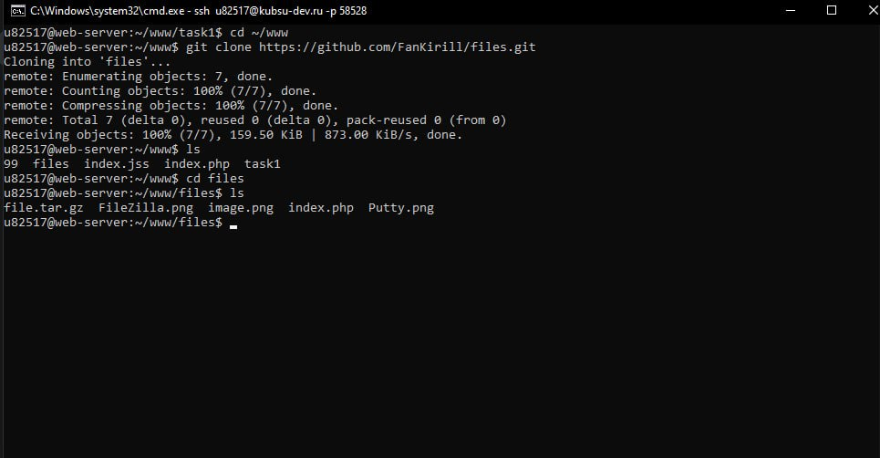
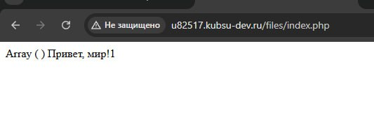
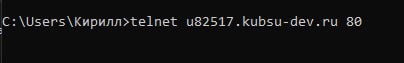
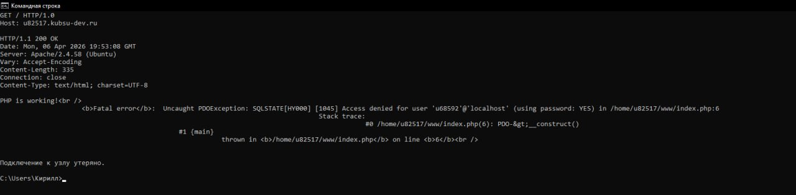
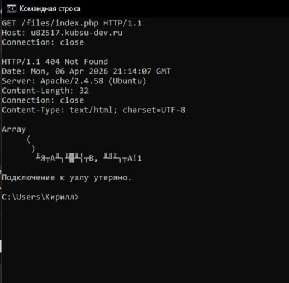
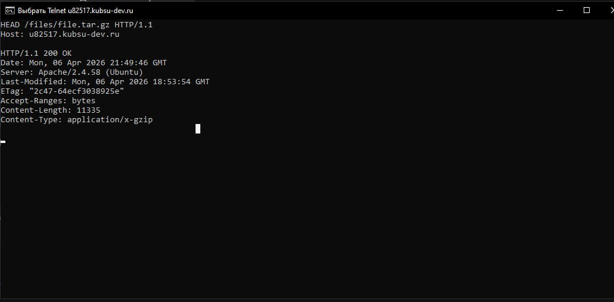
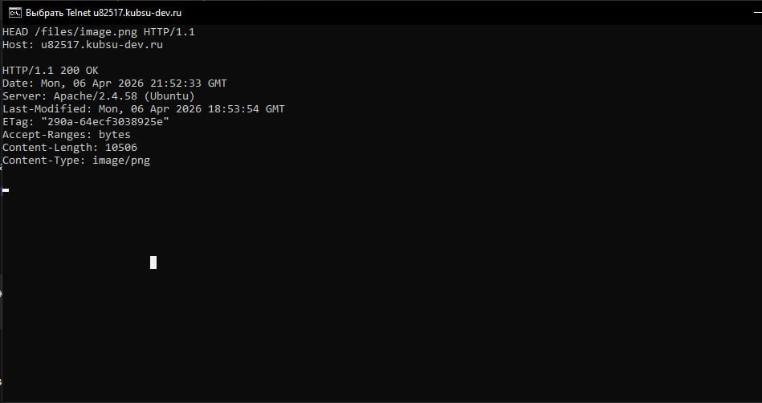
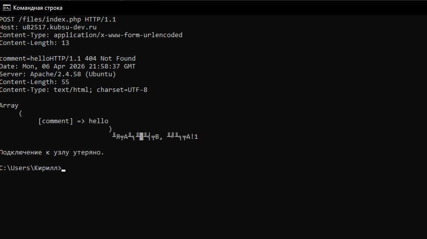
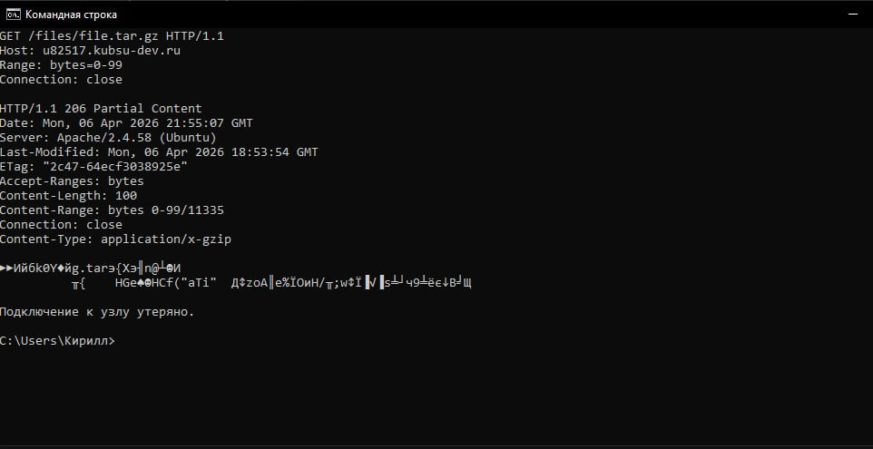
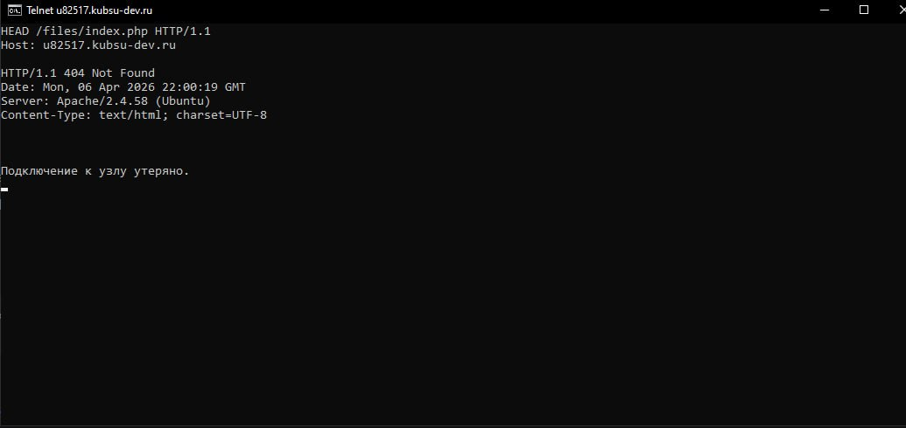

Выполнение HTTP-запросов через Telnet к серверу u82517.kubsu-dev.ru


Проверка в браузере. Перед выполнением HTTP-запросов я залил файлы из каталога files на веб-сервер через Git. Для этого я подключился к серверу по SSH и выполнил git clone https://github.com/Fankirill/files.git. После успешного клонирования репозитория в каталог ~/www/files я открыл в браузере страницу http://u82517.kubsu-dev.ru/files/index.php. На скриншоте видно, что страница открылась и отобразила текст Array() Привет, мир!1 — это значит, что файлы успешно залиты, а index.php работает (пусть и с ошибкой подключения к базе данных, что для данного задания не критично).


Задание 1. Я подключился к серверу через Telnet и отправил запрос GET / HTTP/1.0 с заголовком Host: u82517.kubsu-dev.ru. Сервер вернул код 200 OK и в теле ответа выдал ошибку PHP — скрипт главной страницы не смог подключиться к базе данных, но сам запрос отработал корректно.

Задание 2. Через то же Telnet-соединение я отправил GET /files/index.php HTTP/1.1 с указанием хоста. В ответ сервер прислал код 404 Not Found, хотя в теле ответа почему-то был пустой массив Array(). Часть PHP-кода всё равно выполнилась.

Задание 3. Чтобы узнать размер архива file.tar.gz без его скачивания, я использовал метод HEAD — отправил HEAD /files/file.tar.gz HTTP/1.1. Сервер ответил 200 OK и в заголовке Content-Length: 11335, откуда я узнал, что файл весит 11335 байт.

Задание 4. Аналогично через HEAD /files/image.png HTTP/1.1 я получил заголовки файла image.png. Сервер вернул 200 OK и Content-Type: image/png, значит, это PNG-изображение.

Задание 5. Для отправки комментария я использовал метод POST. Я отправил запрос POST /files/index.php HTTP/1.1, указал Host, Content-Type: application/x-www-form-urlencoded, Content-Length: 13, затем пустую строку и тело comment=hello. Сервер принял данные и вернул Array( [comment] => hello ) — мой комментарий успешно доставлен.

Задание 6. Чтобы скачать только первые 100 байт файла file.tar.gz, я добавил в обычный GET-запрос заголовок Range: bytes=0-99. Сервер ответил кодом 206 Partial Content, заголовком Content-Range: bytes 0-99/11335 и в теле прислал ровно 100 байт бинарных данных архива.

Задание 7. Кодировку страницы index.php я определил снова через HEAD-запрос. Отправил HEAD /files/index.php HTTP/1.1, в ответ получил 200 OK и Content-Type: text/html; charset=UTF-8, то есть страница в кодировке UTF-8.